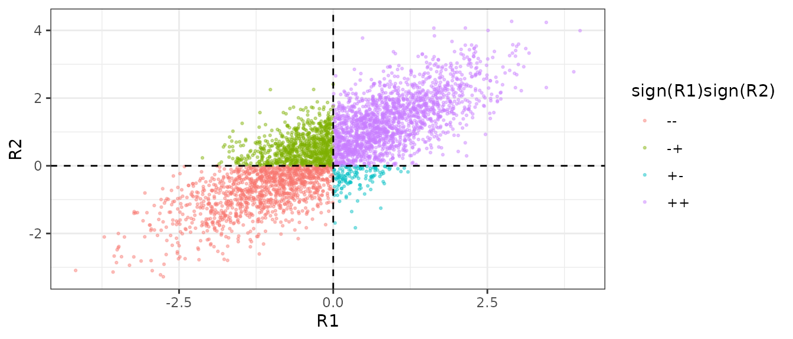
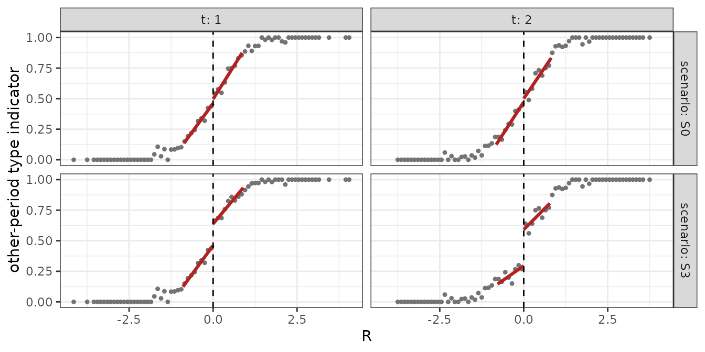
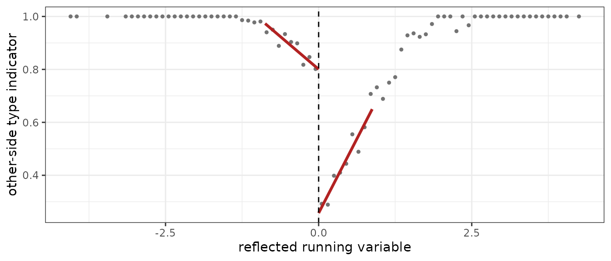
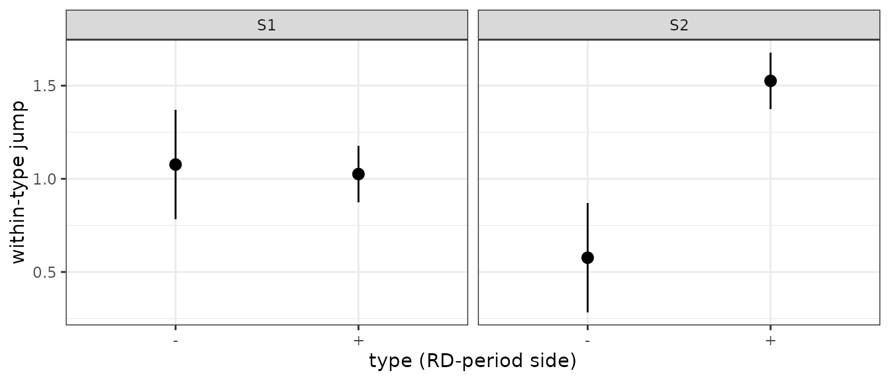
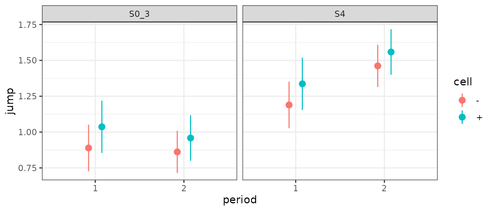

Composition validation tests
Source:vignettes/rddid-validation-tests.Rmd
rddid-validation-tests.Rmd
library(rddid)
library(ggplot2)
fmt <- function(x, d = 3) formatC(x, format = "f", digits = d)
fmtp <- function(p) ifelse(p < 0.001, "< 0.001", fmt(p)) # p-values in tables
pmath <- function(p) ifelse(p < 0.001, "p < 0.001", paste("p =", fmt(p))) # p-values in prose
bin_x <- function(x, w = 0.1) ifelse(x >= 0, floor(x / w) * w + w / 2, -(floor(-x / w) * w + w / 2))Setup
The four tests in this vignette apply when the running variable
varies over time within a unit (the pv sampling scheme);
with a time-constant running variable every unit is on the same side of
the cutoff in every period and the objects below are degenerate. When
varies, a unit can sit on different sides of the cutoff in different
periods. Its type in period
is its side of the cutoff in the other period(s);
and
are the shares of type
just above / below the cutoff in period
,
and
is the within-type confounding discontinuity in period
.
Section 4 of the paper states four assumptions on these objects and
Section 4.4 gives a test for each. Every test function below takes the
same long data frame (id, t, R,
Y) that rddid() takes.
m_b <- function(r) r + r^2 * (r >= 0)
dgp_b <- function(n = 4000, d = 0, alpha = c(1, 1), kappa = 0, sort_p = 0, sort_w = 0.5,
tau = 1, periods = 2, gamma = 0, seed = 1) {
set.seed(seed)
eta <- rnorm(n) # latent level of the running variable
R <- sapply(seq_len(periods), function(t) eta + d * (t - 1) + rnorm(n, 0, 0.5))
if (sort_p > 0) { # sorting: some units just below the RD-period
V1 <- R[, 1] >= 0; r2 <- R[, periods] # cutoff that were above in period 1 move above
mover <- r2 > -sort_w & r2 < 0 & V1 & runif(n) < sort_p
R[mover, periods] <- -R[mover, periods]
}
V <- R >= 0
do.call(rbind, lapply(seq_len(periods), function(t) {
other <- if (periods == 2) V[, 3 - t] else V[, periods] # the unit's type: side in the other period
a <- alpha[other + 1] + gamma * t # within-type confounding discontinuity
data.frame(id = seq_len(n), t = t, R = R[, t],
Y = m_b(R[, t]) + a * V[, t] + tau * V[, t] * (t == periods) + kappa * eta + rnorm(n, 0, 0.5))
}))
}-
d: common drift of between periods — breaks composition stability. -
alpha: the confounding jump by type,c(alpha(0), alpha(1))— unequal values break homogeneous confounding. -
kappa,sort_p: sorting of period-1-above units across the period-2 cutoff, withkappamaking the outcome level depend on the type — breaks continuity of the type distribution. -
gamma: a trend in the confounding across periods (three-period version) — breaks constant confounding within types.
S0 <- dgp_b() # every assumption holds
S1 <- dgp_b(d = 0.5) # composition changes; confounding homogeneous
S2 <- dgp_b(d = 0.5, alpha = c(0.5, 1.5)) # composition changes; confounding heterogeneous
S3 <- dgp_b(kappa = 2, sort_p = 0.5) # sorting at the RD-period cutoff
S0_3 <- dgp_b(periods = 3) # three periods, everything holds
S4 <- dgp_b(periods = 3, gamma = 0.3) # confounding trends across periods
w1 <- reshape(S1[, c("id", "t", "R")], idvar = "id", timevar = "t", direction = "wide")
names(w1) <- c("id", "R1", "R2")
w1$pattern <- with(w1, paste0(ifelse(R1 >= 0, "+", "-"), ifelse(R2 >= 0, "+", "-")))
ggplot(w1, aes(R1, R2, colour = pattern)) +
geom_point(size = 0.5, alpha = 0.4) +
geom_hline(yintercept = 0, linetype = "dashed") + geom_vline(xintercept = 0, linetype = "dashed") +
labs(colour = "sign(R1)sign(R2)") + theme_bw()
With drift (d = 0.5), units just above the period-2
cutoff were mostly below the cutoff in period 1.
Continuous type distribution — rd_typecont()
Continuous type distribution requires
in every period. The test regresses, in each period
,
the indicator of the unit’s side in the other period
,
,
on
:
the local-linear RD jump of that indicator is
.
Building the two per-period jumps directly with rd_bw_cct()
+ rd_period():
side_share <- function(dat) {
w <- reshape(dat[, c("id", "t", "R")], idvar = "id", timevar = "t", direction = "wide")
names(w) <- c("id", "R1", "R2")
V <- w[, c("R1", "R2")] >= 0
lapply(1:2, function(t) {
other <- V[, 3 - t]
d <- data.frame(id = w$id, R = w[[paste0("R", t)]], ind = as.integer(other))
bw <- rd_bw_cct(d$ind, d$R, c = 0)
fit <- rd_period(d$ind, d$R, h = unname(bw["h"]), b = unname(bw["b"]), id = d$id, c = 0)
list(d = d, fit = fit)
})
}
ss0 <- side_share(S0); ss3 <- side_share(S3)
tab_ss <- data.frame(
scenario = rep(c("S0", "S3"), each = 2), t = rep(1:2, 2),
jump = c(sapply(ss0, function(s) s$fit$D), sapply(ss3, function(s) s$fit$D)),
se = c(sapply(ss0, function(s) sqrt(s$fit$V_D)), sapply(ss3, function(s) sqrt(s$fit$V_D)))
)
knitr::kable(tab_ss, digits = 3, col.names = c("scenario", "t", "jump", "SE"))| scenario | t | jump | SE |
|---|---|---|---|
| S0 | 1 | 0.036 | 0.045 |
| S0 | 2 | 0.028 | 0.046 |
| S3 | 1 | 0.177 | 0.042 |
| S3 | 2 | 0.296 | 0.045 |
rd_typecont() computes the same jumps and combines them
into a joint Wald statistic across periods, with the cross-period
covariance of the two jumps (the same units enter both regressions)
inside it. The statistic, its degrees of freedom and p-value are
$ll_wald$stat, $df, $p; the
per-period versions sit in $per_period[[t]]$ll_wald:
tc0 <- rd_typecont(S0, x = "R", time = "t", id = "id", bwselect = "cct", bc = FALSE)
tc3 <- rd_typecont(S3, x = "R", time = "t", id = "id", bwselect = "cct", bc = FALSE)
tc0_bc <- rd_typecont(S0, x = "R", time = "t", id = "id", bwselect = "cct", bc = TRUE)For S0,
,
(per period
and
);
with bc = TRUE the Wald uses the bias-corrected jumps and
their robust variance,
.
For S3,
,
(per period
and
).
S0’s per-period jumps are indistinguishable from zero in either period;
S3’s are not, in either period.
type_share_df <- function(ss, scenario) {
do.call(rbind, lapply(1:2, function(t) {
fit <- ss[[t]]$fit; d <- ss[[t]]$d
agg <- aggregate(d$ind, by = list(R = bin_x(d$R)), FUN = mean)
names(agg)[2] <- "ind"; agg$scenario <- scenario; agg$t <- t
h <- unname(fit$h)
lines <- rbind(
data.frame(R = c(-h, 0), ind = fit$sides[["-"]]$beta0 + fit$sides[["-"]]$slope * (c(-h, 0) - 0), side = "-"),
data.frame(R = c(0, h), ind = fit$sides[["+"]]$beta0 + fit$sides[["+"]]$slope * (c(0, h) - 0), side = "+")
)
lines$scenario <- scenario; lines$t <- t
list(binned = agg, lines = lines)
}))
}
b0 <- type_share_df(ss0, "S0"); b3 <- type_share_df(ss3, "S3")
binned <- rbind(do.call(rbind, b0[, "binned"]), do.call(rbind, b3[, "binned"]))
lines <- rbind(do.call(rbind, b0[, "lines"]), do.call(rbind, b3[, "lines"]))
ggplot(binned, aes(R, ind)) +
geom_point(size = 0.9, colour = "grey45") +
geom_line(data = lines, aes(group = side), colour = "firebrick", linewidth = 1.1) +
geom_vline(xintercept = 0, linetype = "dashed") +
facet_grid(scenario ~ t, labeller = label_both) + labs(y = "other-period type indicator") + theme_bw()
Composition stability — rd_compstable()
Composition stability requires . The test reflects the comparison-period above-cutoff units onto a negative axis and stacks them with the RD-period above-cutoff units: for S1 (, ),
w1 <- reshape(S1[, c("id", "t", "R")], idvar = "id", timevar = "t", direction = "wide")
names(w1) <- c("id", "R1", "R2")
above1 <- w1$R1 >= 0; above2 <- w1$R2 >= 0
refl <- rbind(
data.frame(id = w1$id[above1], x = -(w1$R1[above1]), ind = as.integer(above2[above1])),
data.frame(id = w1$id[above2], x = w1$R2[above2], ind = as.integer(above1[above2]))
)
bw_r <- rd_bw_cct(refl$ind, refl$x, c = 0)
fit_r <- rd_period(refl$ind, refl$x, h = unname(bw_r["h"]), b = unname(bw_r["b"]), id = refl$id, c = 0)
agg_r <- aggregate(refl$ind, by = list(x = bin_x(refl$x)), FUN = mean)
names(agg_r)[2] <- "ind"
h_r <- unname(fit_r$h)
lines_r <- rbind(
data.frame(x = c(-h_r, 0), ind = fit_r$sides[["-"]]$beta0 + fit_r$sides[["-"]]$slope * (c(-h_r, 0) - 0), side = "-"),
data.frame(x = c(0, h_r), ind = fit_r$sides[["+"]]$beta0 + fit_r$sides[["+"]]$slope * (c(0, h_r) - 0), side = "+")
)
ggplot(agg_r, aes(x, ind)) +
geom_point(size = 0.9, colour = "grey45") + geom_line(data = lines_r, aes(group = side), colour = "firebrick", linewidth = 1.1) +
geom_vline(xintercept = 0, linetype = "dashed") +
labs(x = "reflected running variable", y = "other-side type indicator") + theme_bw()
The jump at
estimates
.
rd_compstable() runs the same construction and reports the
jump, its SE, and the Wald test:
cs0 <- rd_compstable(S0, x = "R", time = "t", id = "id", t_rd = 2, comparisons = 1, bwselect = "cct", bc = FALSE)
cs1 <- rd_compstable(S1, x = "R", time = "t", id = "id", t_rd = 2, comparisons = 1, bwselect = "cct", bc = FALSE)
p1 <- cs1$pairs[["2::1"]]; p0 <- cs0$pairs[["2::1"]]For S1: jump , SE , , , with 2680 above-cutoff units from , 1985 from , and 1848 above the cutoff in both periods. The package SE accounts for those 1848 doubly-counted units through the id-matched cross-side covariance term. For S0, for contrast: jump , .
ATU designs — estimand = “atu”
With comparison periods uniformly treated, the ATU requires
composition stability of the below-cutoff shares,
(paper, Section 6); rd_compstable(estimand = "atu") mirrors
the running variable and runs the same construction on the below-cutoff
units, with the same type indicator (above the cutoff in the other
period).
cs1_atu <- rd_compstable(S1, x = "R", time = "t", id = "id", t_rd = 2, comparisons = 1,
bwselect = "cct", bc = FALSE, estimand = "atu")
p1_atu <- cs1_atu$pairs[["2::1"]]For S1, the "att" call above gives jump
,
,
,
on 2680 above-cutoff units from
and 1985 from
;
the "atu" call gives jump
,
,
,
on 1320 below-cutoff units from
and 2015 from
– different units from the "att" call. Both reject under
S1’s drift.
The other three tests are unchanged under
estimand = "atu":
tc_att <- rd_typecont(S1, x = "R", time = "t", id = "id", bwselect = "cct", bc = FALSE)
tc_atu <- rd_typecont(S1, x = "R", time = "t", id = "id", bwselect = "cct", bc = FALSE,
estimand = "atu")rd_typecont() on S1 gives the same joint statistic
either way,
under "att" and 0.299 under "atu".
Homogeneous confounding — rd_homog()
Homogeneous confounding requires
in the comparison period. The test estimates the outcome RD jump within
each type (the unit’s side of the cutoff in the RD period,
type_by = "rd_side", the default), in the comparison
period, and tests equality:
h1 <- rd_homog(S1, y = "Y", x = "R", time = "t", id = "id", comparisons = 1, t_rd = 2, bwselect = "cct", bc = FALSE)
h2 <- rd_homog(S2, y = "Y", x = "R", time = "t", id = "id", comparisons = 1, t_rd = 2, bwselect = "cct", bc = FALSE)
tab_h <- rbind(cbind(scenario = "S1", h1$period_type_jumps), cbind(scenario = "S2", h2$period_type_jumps))
knitr::kable(tab_h[, c("scenario", "period", "type", "jump", "se", "n")], digits = 3, row.names = FALSE)| scenario | period | type | jump | se | n |
|---|---|---|---|---|---|
| S1 | 1 | - | 1.077 | 0.150 | 1320 |
| S1 | 1 | + | 1.026 | 0.077 | 2680 |
| S2 | 1 | - | 0.577 | 0.150 | 1320 |
| S2 | 1 | + | 1.526 | 0.077 | 2680 |
S1:
,
.
S2:
,
.
In S1 the two within-type comparison-period jumps,
and
,
are close to each other (both near
);
in S2 they are
and
,
close to the construction values alpha = c(0.5, 1.5).
tab_h$scenario <- factor(tab_h$scenario, levels = c("S1", "S2"))
ggplot(tab_h, aes(type, jump)) +
geom_pointrange(aes(ymin = jump - 1.96 * se, ymax = jump + 1.96 * se)) +
facet_wrap(~ scenario) + labs(x = "type (RD-period side)", y = "within-type jump") + theme_bw()
Constant confounding discontinuity within types —
rd_trendcell()
Constant confounding within types requires : the same within-type confounding jump at the RD period as at the comparison period. It is not directly testable at the RD period; with two comparison periods (, RD period ) the test instead checks whether the within-type jumps are constant across the two comparison periods, a pre-trends check in the difference-in-differences sense:
tr0 <- rd_trendcell(S0_3, y = "Y", x = "R", time = "t", id = "id", comparisons = c(1, 2), t_rd = 3, bwselect = "cct", trend = "constant", bc = FALSE)
tr4 <- rd_trendcell(S4, y = "Y", x = "R", time = "t", id = "id", comparisons = c(1, 2), t_rd = 3, bwselect = "cct", trend = "constant", bc = FALSE)
tab_tr <- rbind(cbind(scenario = "S0_3", tr0$cell_period_jumps), cbind(scenario = "S4", tr4$cell_period_jumps))
knitr::kable(tab_tr[, c("scenario", "cell", "period", "jump", "se", "n")], digits = 3, row.names = FALSE)| scenario | cell | period | jump | se | n |
|---|---|---|---|---|---|
| S0_3 | + | 1 | 1.037 | 0.093 | 1953 |
| S0_3 | + | 2 | 0.959 | 0.081 | 1953 |
| S0_3 | - | 1 | 0.889 | 0.083 | 2047 |
| S0_3 | - | 2 | 0.862 | 0.075 | 2047 |
| S4 | + | 1 | 1.337 | 0.093 | 1953 |
| S4 | + | 2 | 1.559 | 0.081 | 1953 |
| S4 | - | 1 | 1.189 | 0.083 | 2047 |
| S4 | - | 2 | 1.462 | 0.075 | 2047 |
S0_3:
,
.
S4:
,
.
In S4 each cell’s jump rises from
to
:
cell “+” from
to
,
cell “-” from
to
,
by about the construction increment gamma = 0.3. With only
two comparison periods the constant form is what can be tested here;
trend = "linear" needs three or more.
tab_tr$scenario <- factor(tab_tr$scenario, levels = c("S0_3", "S4"))
ggplot(tab_tr, aes(period, jump, colour = cell)) +
geom_pointrange(aes(ymin = jump - 1.96 * se, ymax = jump + 1.96 * se), position = position_dodge(width = 0.3)) +
facet_wrap(~ scenario) + theme_bw()
Summary
tc1 <- rd_typecont(S1, x = "R", time = "t", id = "id", bwselect = "cct", bc = FALSE)
tc2 <- rd_typecont(S2, x = "R", time = "t", id = "id", bwselect = "cct", bc = FALSE)
cs2 <- rd_compstable(S2, x = "R", time = "t", id = "id", t_rd = 2, comparisons = 1, bwselect = "cct", bc = FALSE)
cs3 <- rd_compstable(S3, x = "R", time = "t", id = "id", t_rd = 2, comparisons = 1, bwselect = "cct", bc = FALSE)
h0 <- rd_homog(S0, y = "Y", x = "R", time = "t", id = "id", comparisons = 1, t_rd = 2, bwselect = "cct", bc = FALSE)
h3 <- rd_homog(S3, y = "Y", x = "R", time = "t", id = "id", comparisons = 1, t_rd = 2, bwselect = "cct", bc = FALSE)
rid <- function(dat, ...) rddid(dat, y = "Y", x = "R", time = "t", id = "id", t_rd = max(dat$t), bwselect = "cct", ...)
estfmt <- function(r) sprintf("%s (%s)", fmt(r$estimates["Conventional", "est"]), fmt(r$estimates["Conventional", "se"]))
r0 <- rid(S0); r1 <- rid(S1); r2 <- rid(S2); r3 <- rid(S3)
r0_3 <- rid(S0_3); r4c <- rid(S4); r0_3l <- rid(S0_3, weights = "linear"); r4l <- rid(S4, weights = "linear")
tab1 <- data.frame(
scenario = c("S0", "S1", "S2", "S3"),
type_cont_p = fmtp(c(tc0$ll_wald$p, tc1$ll_wald$p, tc2$ll_wald$p, tc3$ll_wald$p)),
comp_stable_p = fmtp(c(p0$ll_wald$p, p1$ll_wald$p, cs2$pairs[["2::1"]]$ll_wald$p, cs3$pairs[["2::1"]]$ll_wald$p)),
homog_p = fmtp(c(h0$p_value, h1$p_value, h2$p_value, h3$p_value)),
rddid_est_se = c(estfmt(r0), estfmt(r1), estfmt(r2), estfmt(r3)),
truth = 1
)
knitr::kable(tab1, col.names = c("scenario", "type-cont p", "comp-stable p", "homog p", "rddid() est (SE)", "truth"))| scenario | type-cont p | comp-stable p | homog p | rddid() est (SE) | truth |
|---|---|---|---|---|---|
| S0 | 0.659 | 0.946 | 0.948 | 0.840 (0.081) | 1 |
| S1 | 0.861 | < 0.001 | 0.762 | 0.909 (0.081) | 1 |
| S2 | 0.861 | < 0.001 | < 0.001 | 0.369 (0.087) | 1 |
| S3 | < 0.001 | 0.290 | 0.983 | 1.304 (0.152) | 1 |
tab2 <- data.frame(
scenario = c("S0_3", "S4"), trendcell_p = fmtp(c(tr0$p_value, tr4$p_value)),
est_constant = c(estfmt(r0_3), estfmt(r4c)), est_linear = c(estfmt(r0_3l), estfmt(r4l)), truth = 1
)
knitr::kable(tab2, col.names = c("scenario", "trend-cell p", "rddid() est (SE), constant", "rddid() est (SE), linear", "truth"))| scenario | trend-cell p | rddid() est (SE), constant | rddid() est (SE), linear | truth |
|---|---|---|---|---|
| S0_3 | 0.800 | 1.113 (0.071) | 1.147 (0.134) | 1 |
| S4 | 0.011 | 1.563 (0.071) | 1.147 (0.134) | 1 |
In S0 all four assumptions hold and the estimate, 0.840 (0.081), sits at the truth of 1. In S1 composition stability is rejected () while homogeneous confounding is not (), and the estimate, 0.909 (0.081), is still at the truth — the identification result holds under either composition stability or homogeneous confounding. In S2 both are rejected ( and ), and the estimate, 0.369 (0.087), is off the truth by the composition term. In S3 type continuity is rejected () and the estimate, 1.304 (0.152), is off. In the three-period design, S4’s trend-cell test rejects (): the constant-weight estimate, 1.563 (0.071), is off the truth while the linear-weight estimate, 1.147 (0.134), is close to it.